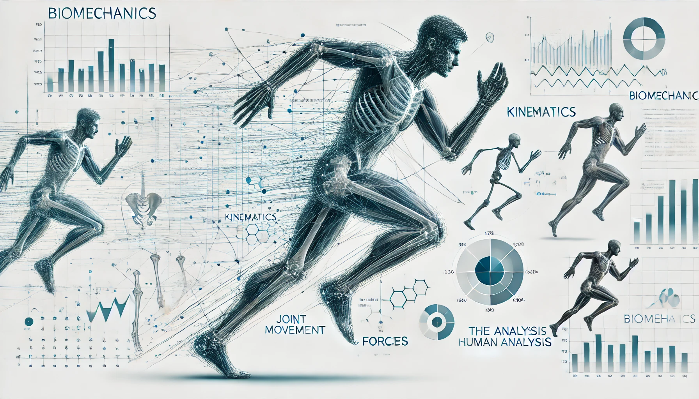

Have you ever pretended that you were brandishing a lightsabre?
Did you wish that you could have music accompany your skillful hand?
You can finally use those sick lightsabre wielding skills to play music!
arrow_upward
Use the force to find out how
Making Muscles with Servos

The movement of the human body is a well studied field and using some basic physics, we can move human-like
figures using simple mechanical components like a couple of servos.